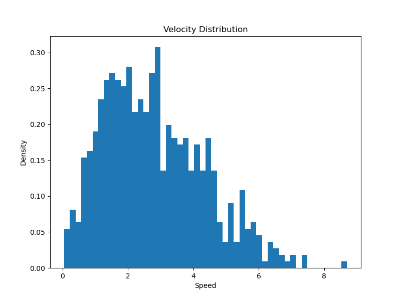
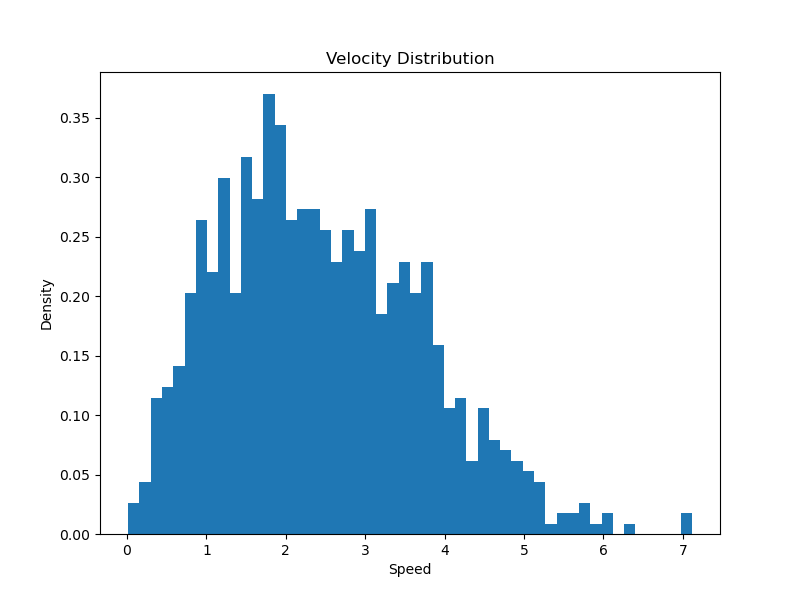
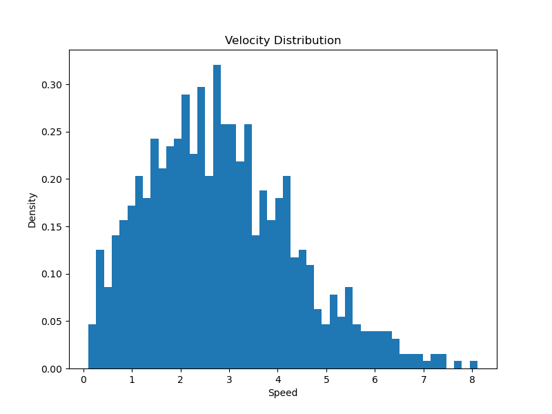

计算机模拟物理作业
2023年11月20日
夏泽宇 2021012242
1.1
# 初始速度分布
self.velocities = np.random.normal(0, 1, (n, 2))
# 确保总动量为零
self.velocities -= np.mean(self.velocities, axis=0)
# 调整速度以匹配预期的总动能
kinetic_energy = 0.5 * np.sum(self.velocities ** 2)
desired_kinetic_energy = 1.5 * n * self.temperature
velocity_scale = np.sqrt(desired_kinetic_energy / kinetic_energy)
self.velocities *= velocity_scale
# Velocity Verlet算法
self.positions += self.velocities * dt + 0.5 * accelerations * dt**2
new_accelerations = self.calculate_accelerations()
self.velocities += 0.5 * (accelerations + new_accelerations) * dt
accelerations = new_accelerations
# 应用周期性边界条件
self.positions %= self.L
r_vec = self.positions[j] - self.positions[i]
r_vec -= np.round(r_vec / self.L) * self.L
r = np.linalg.norm(r_vec)
if r < cutoff_distance:
# 使用软球势
potential_derivative = self.soft_core_potential(r)
force_vec = -potential_derivative * r_vec / r
accelerations[i] += force_vec
accelerations[j] -= force_vec
else:
# 使用Lennard-Jones势
force_magnitude = self.lj_force(r)
force_vec = force_magnitude * r_vec / r
accelerations[i] += force_vec
accelerations[j] -= force_vec

1.2


1.3
for step in range(num_steps):
# 更新位置
self.positions += self.velocities * dt
# 更新自上次碰撞以来的时间
self.time_since_last_collision += dt
# 检测碰撞并更新速度
for i in range(self.n):
for j in range(i + 1, self.n):
r_vec = self.positions[j] - self.positions[i]
# 这里不应使用周期性边界条件
# r_vec -= np.round(r_vec / self.L) * self.L # 周期性边界条件
r = np.linalg.norm(r_vec)
if r < self.sigma:
# 碰撞发生，重置碰撞时间
self.time_since_last_collision[i] = 0
self.time_since_last_collision[j] = 0
# 计算径向单位向量
r_hat = r_vec / r
# 计算径向速度分量
v1_radial = np.dot(self.velocities[i], r_hat)
v2_radial = np.dot(self.velocities[j], r_hat)
# 交换径向速度分量
self.velocities[i] += (v2_radial - v1_radial) * r_hat
self.velocities[j] += (v1_radial - v2_radial) * r_hat
overlap = self.sigma - r
displacement = (overlap / 2) * (r_vec / r)
self.positions[i] -= displacement
self.positions[j] += displacement

2.1
2.2

